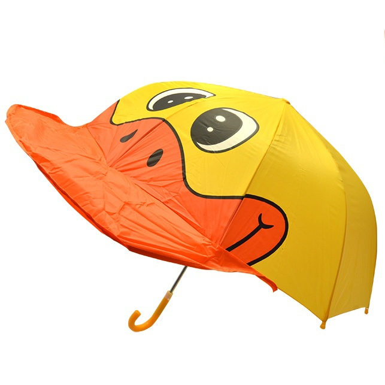

GRUPA 1
Wstęp do HTML
TO_DO: wprowadz kilka akapitow z krotkim opisem do czego służy HTML, zrob wciecia dla kazdego akapitu i wyrownaj tekst do prawej/lewej/wycentruj i obu stron.Formatowanie
Les Choux – miejscowość i gmina we Francji, w Regionie Centralnym, w departamencie Loiret.Według danych na rok 1990 gminę zamieszkiwało 377 osób, a gęstość zaludnienia wynosiła 11 osób/km² (wśród 1842 gmin Regionu Centralnego Les Choux plasuje się na 774. miejscu pod względem liczby ludności, natomiast pod względem powierzchni na miejscu 257.).
Tarmstedt - miejscowość i gmina w Niemczech, w kraju związkowym Dolna Saksonia, w powiecie Rotenburg (Wümme), siedziba gminy zbiorowej Tarmstedt.
Sabah – stan w Malezji, drugi pod względem wielkości, położony w północno-wschodniej części wyspy Borneo, graniczy z Indonezją i stanem Sarawak. Stolicą stanu jest miasto Kota Kinabalu. Stan obejmuje obszar ok. 72 500 km², zamieszkuje go 2 449 400 osób (stan na rok 2000). Do 1963 roku był terytorium zależnym Wielkiej Brytanii pod nazwą Borneo Północne.
Lista numerowana
TO_DO: wprowadz przykładowe listy numerowane, uzyj roznych formatow numeracji. Dodaj zagniezdzone listy.Wypunktowanie
Lista przedmiotów - I semestr, Informatyka
- Środowisko programisty
- Wstęp do programowania
- Wykład
- Ćwiczenia
- Labolatorium
- Wstęp do matematyki
- Matematyka dyskretna
- Wykład
- Ćwiczenia
- Język angielski
- Lektorat
Dni tygodnia
- Poniedziałek
- Wtorek
- Środa
- Czwartek
- Piątek
- Sobota
- Niedziela
Tabela
| Pierwsza Kolumna | Druga Kolumna | Trzecia Kolumna | Czwarta Kolumna |
|---|---|---|---|
| Jestem elementem tabeli | Jestem drugim elementem | Jestem najlepszym elementem | Jakie z was elementy |
| Kolejny element | Nastepny element | Jakis tam element | Nie ma tu elementu |
| Jestem tu | Gdzie jestes? | Tam gdzies jest | Nie widze go |
Linki
Obrazki
 POKEMON - nazwa serii gier konsolowych firmy Nintendo,
tworzonych od 1996 przez Satoshiego Tajiri. Początkowo wydana na przenośną konsolę Game Boy,
seria stała się drugą najbardziej dochodową i udaną grą firmy Nintendo, zaraz po serii Mario.
Po sukcesie gier, świat pokémonów został także zaadaptowany do anime, filmów, mangi, zabawek,
książek itp. Do 28 maja 2010 r. sprzedaż wszystkich gier z serii osiągnęła ponad 200 milionów egzemplarzy
POKEMON - nazwa serii gier konsolowych firmy Nintendo,
tworzonych od 1996 przez Satoshiego Tajiri. Początkowo wydana na przenośną konsolę Game Boy,
seria stała się drugą najbardziej dochodową i udaną grą firmy Nintendo, zaraz po serii Mario.
Po sukcesie gier, świat pokémonów został także zaadaptowany do anime, filmów, mangi, zabawek,
książek itp. Do 28 maja 2010 r. sprzedaż wszystkich gier z serii osiągnęła ponad 200 milionów egzemplarzy  przedmiot chroniący przed deszczem, słońcem lub śniegiem. Składa się z dwóch części: rączki oraz usztywnionego kawałka materiału, najczęściej o kształcie wielokąta foremnego. Pierwsze parasole były używane w starożytnym Egipcie około czterech tysięcy lat temu. W Chinach ok. 400 r.n.e. parasole wykonywane były z natłuszczonego papieru. Parasol został spopularyzowany w Europie przez Greków. Thomas Wright, angielski pisarz z XVII wieku, w swoich Domestic Manners of the English opisał gentlemana, któremu sługa podaje parasol. John Evelyn w swym pamiętniku opisał pod datą 22 czerwca 1664 roku kolekcję rzadkich towarów luksusowych pokazanych mu przez niejakiego Thompsona — wśród nich był chiński parasol. Na początku XVIII wieku rozpoczęto produkcję chińskich parasoli we Francji i Anglii.